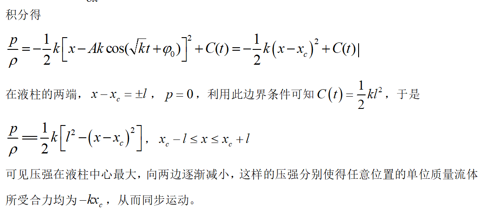
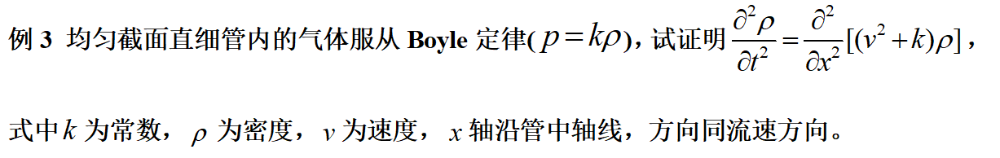
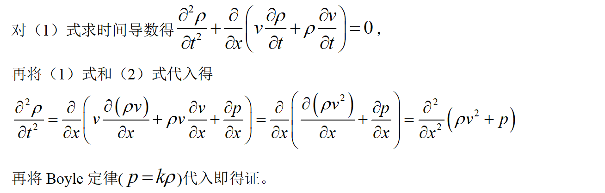

第 1 页
2
理想流体流动
流体力学暑期课ppt/2 理想流体流动.pptx 已解包为 HTML 幻灯片文本和内嵌图片内容。
本页是 181103 原始资料的 HTML 内容版，只发布 HTML、图片和样式产物；不提供 PDF、PPT、DOC、ZIP 原件下载链接。
读完本 HTML 正文后，回到历年真题按 325 原文小题 / 68 组题拆分复核；不要把资料答案、教材推导和原卷答案证据混写。
2
理想流体流动
预 备
理想流体流动模型
适用条件：低粘（大
Re
数）
e.g.
无流动分离的边界层以外的流动
系统（
system
）和控制体（
control volume
）：
1.
系统
——
物质体（
a definite fixed mass of material
），即流体（微）团
拉格朗日方法研究
系统动量和能量的变化
2.
控制体
——
流动空间中的某个（微元）子空间（
a fixed volume
）
控制面（
control surface
）
欧拉方法研究流体流经控制体时
控制体内
质量、动量和能量
的变化
2.1
质量连续方程
一、积分形式方程
二、微分形式方程
讨论：
2.2
理想流体动量方程
一、应力张量
P=-
pI
二、
Euler
方程
流体微团质量
三、理想流体不可压缩流动定解问题
常用边界条件
固壁速度边界条件：
连续（不渗透、不分离）
水面压强边界条件：
（不计表面张力）
无穷远边界条件：
例题
1
：
例
2
水平直细管内有一长为
2l
的不可压缩流体，流体受管中点的吸引，引力与到管中点的距离成正比。求流体的速度及压强分布。不考虑大气压强。
O
*
*
根据牛顿第二定律
，
液柱的运动满足
A
和φ
0
由初始条件决定
液柱运动
加速度
为
为
求压强分布，
选取
t
时刻位于
x
处的单位长液柱作为研究对象，根据欧拉方程有
加速度
与质心加速度相同，因而
代回
（
1
）
式得
（
1
）
此页主要是图形/公式对象，已保留可抽取图片；复杂矢量对象按后续人工精修队列处理。

考虑
t
时刻在
x
处的流体质点，根据质量连续性方程有
根据欧拉方程有
（
1
）
（
2
）


rot gradφ=0
（
φ
为标量）
div rot
a
=0
div gradφ=
△
φ
rot rot
a
=grad div
a
-
△
a
此页主要是图形/公式对象，已保留可抽取图片；复杂矢量对象按后续人工精修队列处理。
此页主要是图形/公式对象，已保留可抽取图片；复杂矢量对象按后续人工精修队列处理。